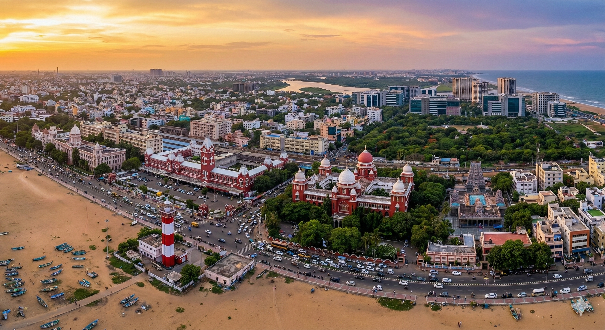

Chennai, formerly known as Madras, is the capital city of Tamil Nadu, located on the southeastern coast of India along the Bay of Bengal. Situated on the Coromandel Coast, the city lies at an average elevation of about 6 metres (20 feet) above sea level. Founded in the 17th century by the British, Chennai began as a trading post around Fort St. George.
Area: Approximately 426 Square Kilometres
Often called the “Gateway to South India,” Chennai is a city where rich traditions blend seamlessly with modern development. It is renowned for its classical music, Bharatanatyam dance, Dravidian architecture, ancient temples, and vibrant cultural heritage. Alongside tradition, Chennai is also a major hub for IT parks, automobile industries, education, healthcare, and the Tamil film industry (Kollywood).
Summer: April–June (Up to 40°C)
Monsoon: October–December (Heavy Rainfall)
Winter: December–February (20°C–25°C)
Rainfall: Northeast Monsoon
Time Zone: IST (UTC +5:30)
Population: ~5.1 Million (City)
Languages: Tamil, English, Telugu, Hindi
Literacy: 90%
Republic Day: 26th Jan
Independence Day: 15th Aug
Gandhi Jayanti: 2nd Oct
Major Festivals: Pongal, Diwali, Navaratri
Police: 100
Fire: 101
Ambulance: 108
Women Helpline: 1091
Gen Info: +91 88888 88888

Chennai’s residential market is a mix of coastal neighbourhoods, established urban localities, and rapidly developing suburban corridors. Strong rental demand is driven by IT and industrial growth along OMR (Old Mahabalipuram Road), ECR, Porur, Sholinganallur, Perungudi, and Siruseri. While central Chennai remains dense and congested, newer suburban zones offer modern housing, improved infrastructure, and better living conditions.
Public transport has improved significantly with metro rail, suburban trains, buses, and auto-rickshaws; however, expatriates generally prefer chauffeur-driven cars due to long distances, traffic congestion, heat, and comfort requirements. Peak-hour traffic is common, especially along the OMR IT Corridor and central business districts.
Preferred expatriate residential areas include Adyar, Besant Nagar, Thiruvanmiyur, Nungambakkam, Anna Nagar, Alwarpet, Teynampet, ECR, and OMR . Emerging expat-focused zones such as Sholinganallur, Perungudi, and Siruseri offer new gated communities, international schools, and close proximity to IT parks.
Chennai offers a range of premium hotels and serviced residences close to major business and expatriate areas. Popular upscale options include Taj Coromandel, ITC Grand Chola, Hyatt Regency Chennai, The Raintree St. Mary’s Road, Novotel Chennai OMR, Sheraton Grand, and Leela Palace Chennai.
Advanced booking is strongly recommended during peak tourist months (December–January) and during the Chennai Music Season, when availability is limited.
Long-term housing in Chennai includes independent houses, villas, townships, and modern high-rise apartments. Gated communities—especially along ECR, OMR, Siruseri, Perungudi, and Sholinganallur—are highly preferred by expatriates.
Typical facilities include 24×7 security, power backup, swimming pools, gyms, landscaped parks, children’s play areas, clubhouses, sports facilities, convenience stores, and professional maintenance support.
Independent houses are commonly found in older areas such as Anna Nagar, Kilpauk, Adyar, and Besant Nagar. These offer more space and privacy but may require private arrangements for security, maintenance, and utilities.
Villas and premium townships along ECR, OMR, and GST Road are increasingly popular for expatriates seeking a high-end lifestyle with gated security and community amenities.
Breakdown of available properties:
Availability: Moderate
Types: Detached (~35%), Semi-detached (~65%)
Style: 3–4 bedroom villas or bungalows with
terraces, some featuring private gardens
Average Age: 10–20 years
New Construction (≤5 years): ~15% (mainly in
ECR, OMR, and Perungudi)
Availability: Good
Located in: Small buildings (~40%), Large
high-rise communities (~60%)
Style: Modern 2–4 BHK apartments with
balconies, modular kitchens, and contemporary interiors
Average Age: 5–10 years
New Construction (≤5 years): ~30% (primarily
along OMR, Perungudi, Sholinganallur, and Siruseri)
Chennai’s high-rise residential supply is largely driven by IT-sector growth and proximity to the IT Expressway, offering a wide range of mid- to premium-budget housing options.
Serviced apartment options in Chennai fall into three broad categories:
A. Professionally Managed Serviced Apartments
Typically located near business hubs such as OMR, Perungudi,
Guindy, and Nungambakkam.
• Housekeeping, Wi-Fi, security, laundry, and concierge
services
• Consistent quality standards
• Suitable for expatriates and corporate travelers
B. Stand-Alone Serviced Apartments
Common in areas like Adyar, Anna Nagar, and T. Nagar.
• Individually owned or locally managed
• Quality and facilities vary significantly
• Thorough inspection recommended
C. Guest Houses
• Shared facilities and limited privacy
• Common in central areas
• Generally not preferred by expatriates
Before finalizing serviced accommodation, verify internet reliability, security systems, housekeeping standards, and availability of kitchen and laundry facilities.
Chennai typically requires higher rental deposits compared to many other Indian metros. Security deposits usually range from 6 to 10 months’ rent. Premium gated communities may demand higher deposits, though negotiation is often possible in newer developments.
Location and lifestyle requirements are critical when selecting a residence. Key factors include:
Confirm whether rent includes maintenance or clubhouse charges. Utilities such as electricity, gas, water, and internet are usually paid directly by tenants based on usage.
Furniture and appliance rental services are widely available in Chennai, offering full-home furnishing packages for short- and long-term stays. Items typically include beds, sofas, dining sets, wardrobes, TVs, refrigerators, washing machines, and air-conditioners, along with installation and basic maintenance support.

Chennai has a well-developed banking and financial services ecosystem, supported by major national banks, private sector institutions, and international banks. Residents and expatriates can easily access services related to bank account opening, foreign exchange, digital payments, and compliance with local financial regulations, ensuring smooth financial management during their stay.
The official currency of India is the Indian Rupee (INR).
Credit cards are widely accepted in Chennai, particularly at shopping malls, branded retail stores, restaurants, cafes, hotels, and for online services.
RuPay, VISA, and MasterCard are commonly accepted. American Express is accepted only at select premium establishments, and confirmation is advised prior to use.
International credit card transactions may attract foreign transaction charges depending on the card issuer. Please verify applicable fees with your bank.
Chennai has a robust and extensive ATM network covering most residential and commercial areas of the city.
Traveller’s cheques can be purchased or encashed at major banks and authorized money changers in Chennai.
Commonly available currencies include US Dollar and British Pound Sterling, with other major currencies offered by select banks.
A valid passport is mandatory when purchasing or encashing traveller’s cheques.
Chennai is home to all major public sector banks, private banks, and several international banking institutions.
Typical Banking Hours:
Most banks operate between 10:00 – 16:00 on weekdays, though
timings may vary slightly by branch.
As per Indian Foreign Exchange and Income Tax regulations, foreign nationals are generally permitted to open one bank account per city.
Relocation consultants can assist in opening the following types of accounts:
Document requirements may vary slightly by bank, but typically include:
Account activation usually takes 2 to 10 working days, depending on verification procedures. Debit/ATM cards are issued upon request.
Most major banks in Chennai provide comprehensive internet and mobile banking facilities, allowing customers to access:
These services are available 24/7 and are supported by strong security systems and customer support from leading banks.

Common health risks in Chennai include dengue fever, chikungunya, malaria, typhoid, hepatitis A & B, cholera, diarrhoeal diseases, and seasonal influenza. Mosquito-borne illnesses generally increase during the northeast monsoon season (October–December) due to water stagnation.
Chennai’s air quality is usually moderate but may fluctuate due to construction activity, coastal humidity, and traffic congestion. Individuals with asthma or respiratory conditions are advised to take appropriate precautions.
Ensure that all routine vaccinations are up to date before travelling or relocating to Chennai.
It is advisable to identify the nearest hospital from your residence in advance. Traffic congestion on major routes such as OMR, Mount Road, and GST Road may cause delays during peak hours.
Many expatriates prefer using private taxis or ride-hailing services such as Ola and Uber for quicker emergency transport. Always carry valid identification such as a passport, visa, or Residential Permit (RP) when seeking medical treatment.
Chennai is one of India’s leading healthcare hubs, offering world-class private hospitals, advanced diagnostic facilities, and highly qualified specialists. Treatment costs are generally lower compared to many international destinations.
Most doctors at private hospitals communicate fluently in English. Government hospitals may have limited English-speaking staff.
Pharmacies are widely available across Chennai, and many essential medicines can be purchased over the counter. If you are on regular or long-term medication, inform your doctor to avoid adverse drug interactions.
Tamil Nadu Government Ambulance Service: 108
Many private hospitals such as Apollo, Fortis, and Kauvery also provide paid ambulance services equipped with advanced life-support facilities.
Police Emergency Number: 100
Women’s Helpline: 1091
Medical Emergency / Ambulance: 108
Tourist Helpdesk (Chennai Police): 044-2345 2365

Education in Chennai is available from Kindergarten through Higher Secondary and higher education levels. Early education follows the kindergarten model, and schools in the city are affiliated with a wide range of national and international education boards.
Schools in Chennai are affiliated with boards such as the Tamil Nadu State Board (Samacheer Kalvi), Central Board of Secondary Education (CBSE), Council for the Indian School Certificate Examinations (ICSE / ISC), National Institute of Open Schooling (NIOS), Cambridge Assessment International Education (IGCSE), and the International Baccalaureate (IB).
After completing secondary education, students proceed to Higher Secondary (Classes 11 & 12), which prepares them for admission into colleges, universities, professional programs, and research institutions. Chennai is home to numerous engineering colleges, medical colleges, universities, and international academic programs.
Chennai’s growing IT sector, manufacturing hubs, and expatriate population have led to the development of high-quality international schools offering global curricula and multicultural learning environments.
Chennai has a strong language-learning ecosystem, offering training in Indian and international languages due to its global workforce and academic institutions.
Electricity charges in Chennai are moderate and are regulated by the Tamil Nadu Electricity Board (TNEB). Bills are generated based on consumption slabs, and the due date is clearly mentioned on the bill.
Independent houses in Chennai receive monthly water bills from the Chennai Metropolitan Water Supply and Sewerage Board (CMWSSB).
Most areas in Chennai have daily door-to-door garbage collection managed by the Greater Chennai Corporation (GCC). In gated communities, collection may follow designated schedules.
Bottled LPG is supplied by Indane Gas, Bharat Gas, and HP Gas.
Chennai’s warm and humid climate can attract mosquitoes, cockroaches, ants, and other pests. Regular pest control is recommended for hygiene and safety.
Numerous service providers operate across the city. Ensure chemicals used are approved by the World Health Organisation (WHO), especially in homes with children or pets.

Once you move into your residence in Chennai, local cable operators generally visit the property to set up television connections. Alternatively, they can be contacted through neighbours, building associations, or local service directories.
A nominal one-time installation fee is charged for setting up the connection. Installation usually takes 2–3 working days. Monthly subscription charges can be paid in cash or online, and receipts are issued by the operator.
Most cable providers offer a wide range of popular national and international channels including STAR, National Geographic, ESPN, Discovery, and HBO , along with regional channels in Tamil, English, and Hindi.
For an updated list of available channels and pricing, it is advisable to contact the local cable operator directly.
Direct-To-Home (DTH) satellite television services are widely available across Chennai. Popular providers include:
DTH services involve a one-time installation cost covering the satellite dish, set-top box, and basic subscription package.
Installation generally takes 2–5 working days, depending on technician availability.
Operators provide detailed channel lists and customizable package options. Authorized dealers can be located through platforms such as Sulekha or Justdial.
Chennai has a wide range of FM and AM radio stations that are freely accessible. No subscription is required, and channels can be accessed using any standard radio receiver.
Popular radio stations include Radio Mirchi, Suryan FM, Red FM, BIG FM, Radio City, and AIR FM , offering music, news, talk shows, and entertainment content.
Chennai offers a broad selection of daily newspapers in English and Tamil.
Popular Tamil dailies include:
Popular English dailies include:
Newspapers can be accessed through:
Chennai has an extensive network of post offices located close to most residential and commercial areas, offering reliable postal and mailing services.
Key Post Office:
Chennai General Post Office (GPO)
Rajaji Salai, Chennai – 600001
Contact: 044-2522 0000
The Chennai GPO provides premium services such as Speed Post, EMS, Business Post, parcel services, and online shipment tracking.
Postal services include:
For the latest information on services, operating hours, and postal charges, residents are advised to visit the nearest local post office.

Telephone and broadband connections in Chennai are available through both government-owned and private telecommunications service providers.
The government provider BSNL and private operators such as Airtel, Jio, and Vi (Vodafone Idea) offer landline, broadband, and fiber connections across most residential and commercial areas of the city.
Installation timelines vary by provider. Private operators usually complete installation within 2–5 working days, while installations by BSNL may take 7–14 days.
Documents Required:
A refundable security deposit and installation charge are payable at the time of application. In the case of private service providers, outgoing calls may be temporarily restricted if usage exceeds the deposited amount before the billing cycle ends.
Bills are generated monthly, with the due date clearly mentioned. Payments can be made online, at service provider offices, or through authorized payment centers. Timely payment is advised to avoid service interruption.
If a landline connection is already provided by the landlord, tenants are only responsible for the monthly rental and usage charges, with no additional installation cost.
All major telecom service providers in Chennai offer international calling facilities. This service must be requested at the time of application, and international call tariffs should be confirmed in advance.
The international dialing prefix from India is 00.
Public phone booths displaying PCO / STD / ISD signage are now rarely available in Chennai. Mobile phones and internet-based calling services are widely used and are more reliable alternatives.
Chennai has extensive mobile network coverage with major GSM service providers such as Airtel, Jio, Vi, and BSNL.
These providers offer a wide range of postpaid and prepaid plans to suit different usage requirements.
Postpaid connections require an activation fee and a refundable security deposit. An additional deposit may be required to enable international roaming.
Prepaid SIM cards are easily available from authorized outlets and local mobile retailers across the city.
As per government KYC regulations, activation of any mobile connection requires submission of a valid photo ID and proof of address.
Chennai has a strong broadband infrastructure supported by several reliable internet service providers including Airtel Xstream Fiber, JioFiber, ACT Fibernet, BSNL Bharat Fiber, Hathway, Cherrinet , along with area-specific local fiber operators.
Internet services are delivered through fiber-optic networks and wired telephone lines, depending on location.
Residents frequently recommend ACT, Airtel, and JioFiber for stable speeds, reliability, and work-from-home requirements. It is advisable to confirm area-specific coverage before finalizing a provider.
A wide range of internet plans is available based on speed, data limits, and contract duration, catering to both residential and business users.
Chennai continues to see growth in mobile and fiber internet subscriptions, with expanding 5G coverage and improved network performance across the city.

Chennai offers multiple modes of public transportation for commuting within the city. These include app-based cabs, chauffeur-driven cars, auto rickshaws, buses, suburban rail services, and the Chennai Metro.
For expatriates, app-based ride-hailing services are generally the most convenient and reliable option due to GPS navigation, digital payments, and enhanced safety features. Popular services include Ola, Uber, Namma Yatri, and Rapido (bike taxis).
App-based cab services operate extensively across Chennai and can be booked easily through mobile applications. These services are widely preferred for daily commuting and airport transfers.
Most vehicles are GPS-enabled and support cashless payments. Navigation through apps like Google Maps helps drivers and passengers avoid congested routes where possible.
Popular Ride-Hailing Services:
Auto rickshaws are widely available across Chennai and are commonly used for short-distance travel.
In many central areas, auto rickshaws operate on meters. For non-metered trips, it is advisable to negotiate the fare before starting the journey.
Electric auto rickshaws (e-autos) are gradually increasing in certain parts of the city and contribute to eco-friendly mobility.
Bus services in Chennai are operated primarily by the Metropolitan Transport Corporation (MTC). MTC runs an extensive fleet of standard, express, deluxe, and air-conditioned buses covering most parts of the city.
Bus fares are economical, typically starting from ₹5–15 depending on distance. While buses are a popular choice for daily commuters, peak-hour congestion may cause delays.
Private operators also run select bus services in outer suburban areas.
The Chennai Metro Rail, operational since 2015, connects major zones such as the Airport, Central Railway Station, Guindy, Vadapalani, and Anna Nagar.
The metro offers fast, air-conditioned, and reliable travel with strong safety standards. Smart Cards and QR-based tickets are commonly used.
Phase-2 of the Chennai Metro is currently under development and will add over 118 km of new corridors, significantly expanding coverage across the city.
Name: Chennai International Airport (MAA)
Location: Meenambakkam, approximately 20 km
from central Chennai
Connectivity:
The ongoing Metro Phase-2 expansion will further enhance last-mile connectivity to the airport and surrounding regions.
The Chennai Unified Metropolitan Transport Authority (CUMTA) is implementing a long-term integrated mobility plan aimed at improving coordination between metro rail, buses, suburban trains, MRTS, and last-mile transport.
Key objectives include:
The long-term vision is to create a sustainable, multimodal, and commuter-friendly transport network across Greater Chennai.

Indian nationals and foreign nationals, including persons of Indian origin, transferring their residence to Chennai or arriving in India for employment are permitted to import personal effects and household goods into India free of duty, subject to eligibility conditions prescribed by Indian Customs.
For Indian nationals, the following conditions apply:
For foreign nationals relocating to Chennai, a valid Employment / Work Visa with a minimum validity of one year is mandatory.
Foreign nationals must complete registration with the Foreigners Regional Registration Office (FRRO), Chennai and obtain a Residential Permit, which is required for customs clearance.
The original passport must be produced at the time of customs clearance.
Shipments sent beyond these timelines may be cleared only with customs approval on a case-by-case basis.
It is mandatory that the owner arrives in India before the shipment arrives. Failure to do so may result in demurrage or container detention charges.
The earlier requirement of a compulsory one-year stay in India after availing Transfer of Residence (TR) benefits has been removed. Individuals may leave India even after claiming TR benefits.
Old and used personal and household effects are permitted duty-free, provided the items were previously used by the shipper and the individual holds a valid one-year visa.
Examples include:
The following items are also allowed duty-free within prescribed limits:
New articles (other than those listed below) attract import duty at 35%.
The following items are eligible for a concessional duty rate of 15%, limited to one unit of each item, subject to a combined value cap of ₹5,00,000 (approx. USD 10,000), irrespective of usage:
The concessional duty rate of 15% applies only to the first unit of each eligible item.
Any additional units or value exceeding ₹5,00,000 will attract a customs duty of 35%.
Import duties on alcohol, wine, spirits, and similar beverages are extremely high in India—typically around 200% of the customs-assessed value. Importing such items is generally discouraged.

Chennai has a growing and welcoming expatriate community supported by various social, professional, and cultural groups that help newcomers integrate into city life.
InterNations – Chennai Chapter is one of the most active expatriate networks in the city, offering monthly meetups, networking dinners, cultural events, and interest-based gatherings.
These events are ideal for newcomers seeking social support, professional connections, and practical advice for living in Chennai.
Meetup: Expats in Chennai hosts casual social events such as beach outings, café meetups, food walks, weekend trips, and cultural tours, helping expatriates connect with both fellow expats and locals.
Online communities such as Reddit groups – “Chennai” and “Chennai Expats” are also active platforms where residents exchange recommendations, post questions, and organize informal meetups.
Chennai offers a rich blend of traditional culture and modern leisure options. The city is known for its music, dance, arts, and coastal lifestyle, while also providing contemporary entertainment spaces.
From historic clubs and cultural institutions to shopping malls and performance venues, Chennai provides a balanced lifestyle for working professionals and families.
Chennai has several large shopping malls that combine retail, dining, and entertainment under one roof.
Chennai is a major cultural capital of India with institutions that preserve and promote art, history, and science.
Chennai is internationally renowned for Carnatic music and classical performing arts, hosting year-round concerts and festivals.
Chennai has an active network of interest-based communities that welcome expatriates and locals alike.
These communities—often organized via Facebook, WhatsApp, Reddit, and Meetup—offer excellent opportunities for expatriates to socialize, explore local culture, and build long-term connections in Chennai.
“InterNations events in Chennai helped me meet people quickly and settle into the city’s cultural rhythm.”

Shopping in Chennai offers a vibrant mix of traditional South Indian markets, cultural shopping streets, and modern retail hubs. From iconic silk saree lanes and gold jewellery markets to premium malls and lifestyle brands, the city caters to every kind of shopper.
Chennai is well known for its textiles, Kanchipuram silk sarees, handicrafts, traditional jewellery, electronics, and contemporary fashion. The shopping experience ranges from crowded street bazaars full of local flavour to air-conditioned malls with international brands.
The city features traditional markets aligned along busy streets as well as large malls that bring shopping, dining, and entertainment together under one roof.
T. Nagar is one of Chennai’s busiest and most iconic shopping districts. It is especially famous for silk sarees, textiles, gold jewellery, footwear, and accessories.
Ranganathan Street and Pondy Bazaar are known for heavy crowds, narrow lanes, and excellent bargains, making them ideal for experiencing authentic Chennai street shopping.
George Town is a historic wholesale market area and one of Chennai’s oldest trading hubs.
The area is known for electronics, garments, stationery, kitchenware, hardware, and festival-related items. Prices are highly competitive and the market remains active throughout the day.
Located around Luz Corner, Mylapore Market reflects Chennai’s cultural heritage and traditional lifestyle.
Shops here sell flowers, brassware, pooja items, traditional jewellery, handloom products, and South Indian essentials—ideal for souvenirs and cultural shopping.
Sowcarpet is popular among North Indian communities and is well known for ethnic wear, wedding apparel, jewellery, dry fruits, sweets, and snacks.
The narrow lanes offer bargain-friendly shopping and are especially busy during festive and wedding seasons.
Pondy Bazaar is a lively street shopping destination offering footwear, handbags, fashion accessories, mobile cases, cosmetics, and everyday items at affordable prices.
It is popular among youngsters and budget shoppers looking for trendy products.
One of India’s oldest shopping complexes, Spencer Plaza now functions more like an indoor market.
It houses handicraft shops, Kashmiri stores, artwork outlets, souvenir shops, and export-surplus clothing stores, making it popular with tourists and expatriates.
Chennai has embraced modern mall culture, offering premium shopping, dining, and entertainment experiences across the city.
Popular shopping malls in Chennai include:
Together, Chennai’s traditional markets and modern malls provide a rich and diverse shopping experience—ranging from cultural street shopping to premium lifestyle retail.